Nothing between you and nature.
A private collection of cabins and treehouses on one Transylvanian estate. Fewer guests, on purpose — because privacy is the luxury.
Five ways to disappear.
Cabins and treehouses, each its own world, all on one private estate near Peșteana. A heated pool and jacuzzi at every stay, open through the warm season — roughly May to September.
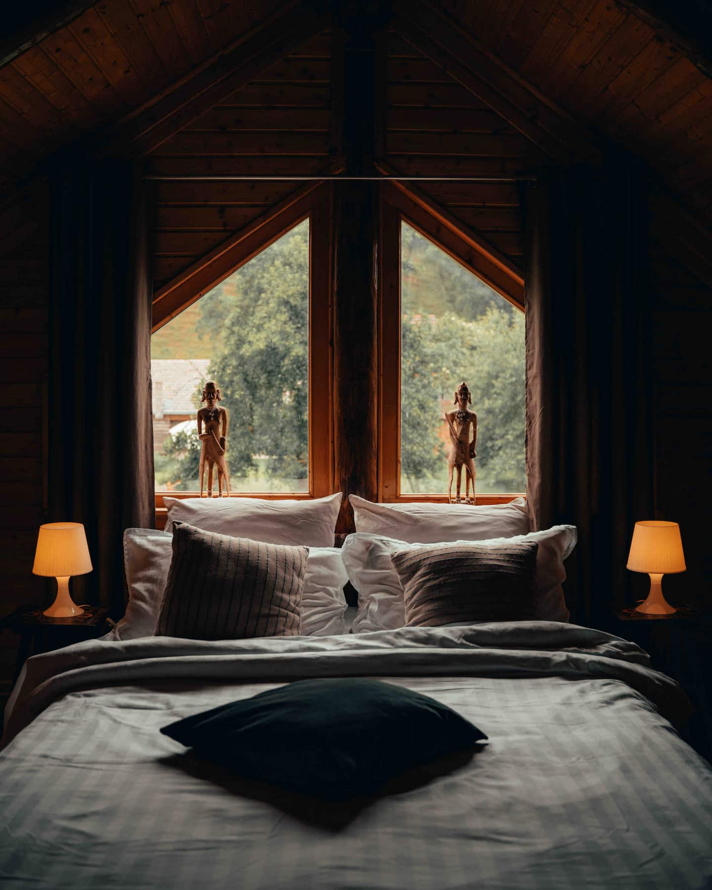
Cabin · sleeps 4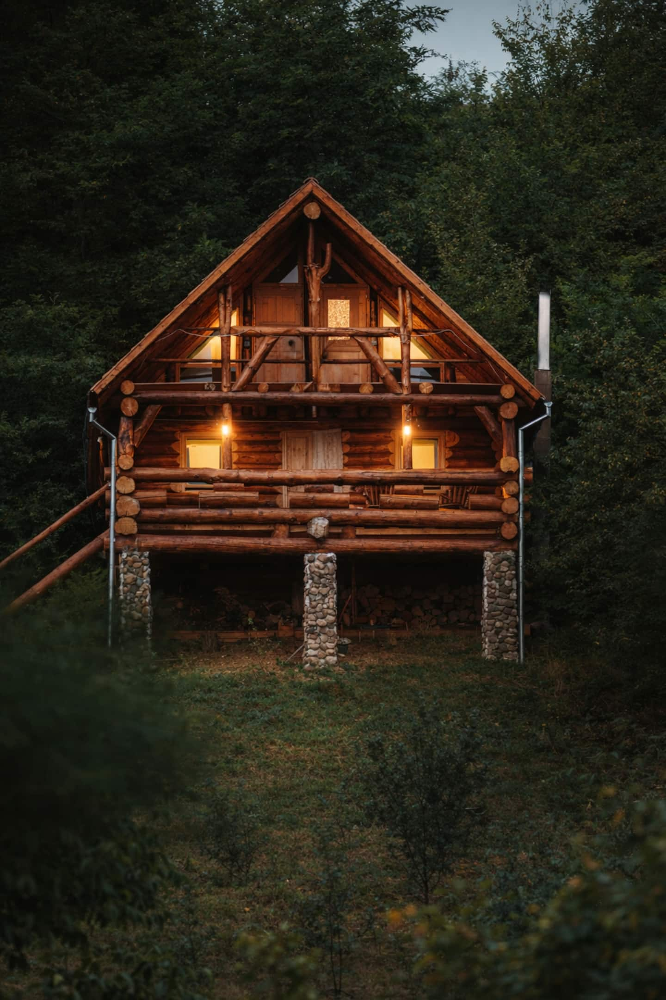
Cabin · sleeps 4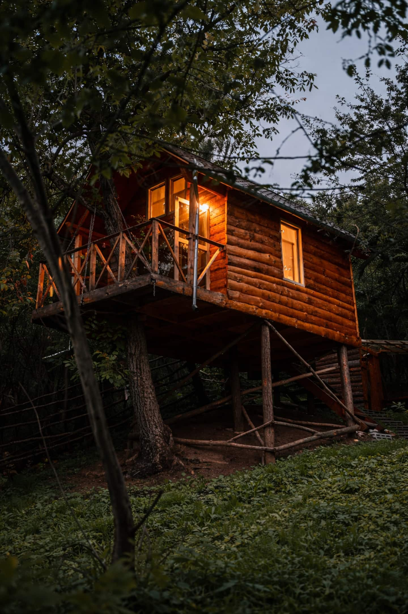
Treehouse · sleeps 2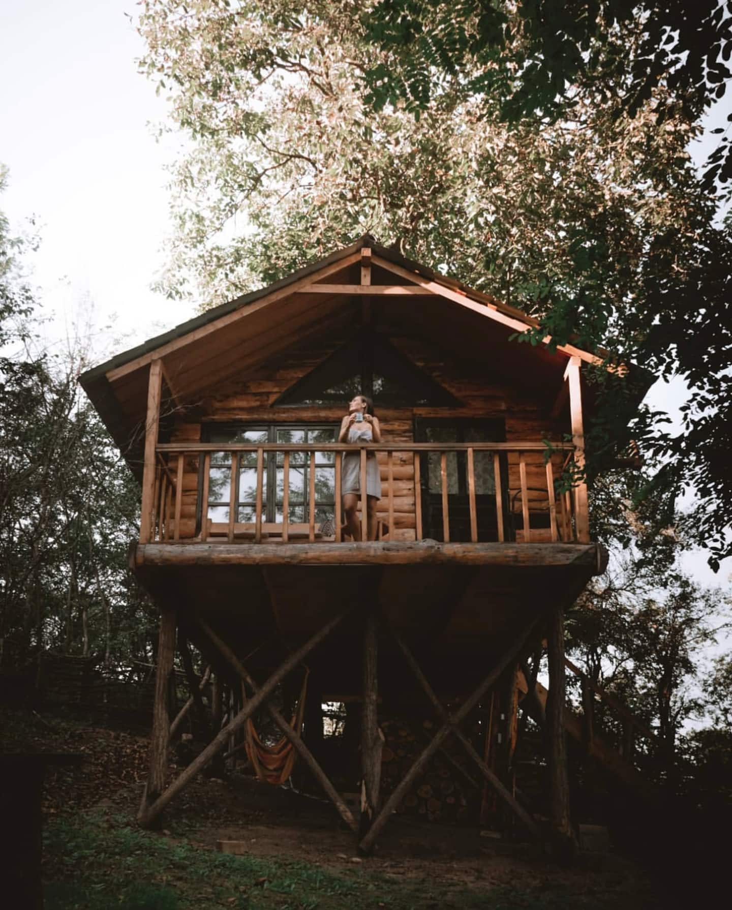
Treehouse · sleeps 2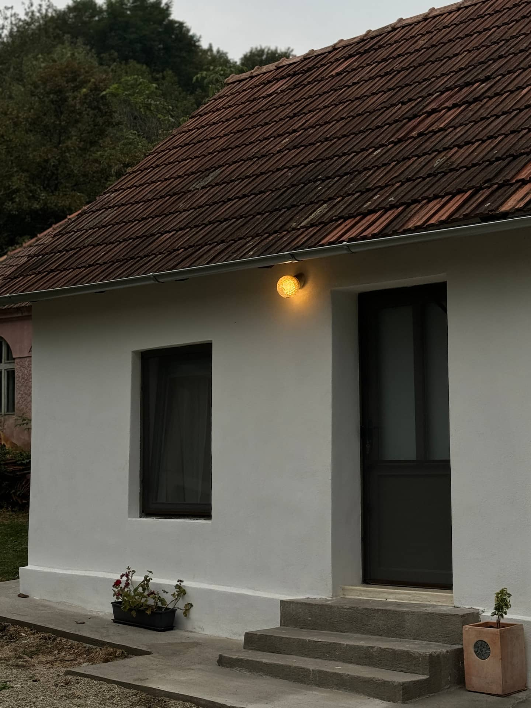
Barn · sleeps 2Quietly unforgettable.
★★★★★A beautiful oasis in a private compound, skillfully combining old and new. What's common is the care put into creating them.
★★★★★Rares and Gabie truly go the extra mile. The cabin is incredibly tranquil and spotless — the perfect getaway. If you have the chance to stay here, do it.
★★★★★If you're debating booking this place — just do it. The views are unreal and it's so peaceful up on the hill. One hundred percent worth it.
★★★★★Honestly the best place I've ever stayed. The hosts were so kind and welcoming, and went above and beyond. It made my trip unforgettable.
★★★★★So peaceful, so beautiful. The house on top of the hill was fantastic — the views from the terrace were amazing. We certainly plan to return.
★★★★★Everything was exactly as in the photos — clean, cosy, and that quiet, pleasant atmosphere we loved most.
★★★★★My favourite place we stayed in Romania. The most breathtaking views — we wish we'd booked more than two nights.
★★★★★Almost three days in a wonderful, private place — we disconnected completely from the everyday. I recommend it to anyone looking for peace and nature.
★★★★★Beautiful surroundings, very private, and incredibly peaceful. The perfect place to unwind and enjoy nature.
★★★★★One of those places that exceed your expectations. It has everything you need to disconnect and relax.
★★★★★The pictures don't do this place justice. The hosts were lovely and friendly — perfect for relaxing in the hammocks.
★★★★★Great place, owned by great people. I'd recommend it if you want a really nice experience.
★★★★★The experience was pleasant and peaceful. I recommend it wholeheartedly.
★★★★★The perfect place.
The land, the table, the quiet.
One private hillside, kept for fewer guests on purpose. A short, seasonal menu cooked on request. And wild Transylvania just beyond the door — forest, hills and long, unhurried quiet.
- One private estate
- Meals on request
- Wild Transylvania
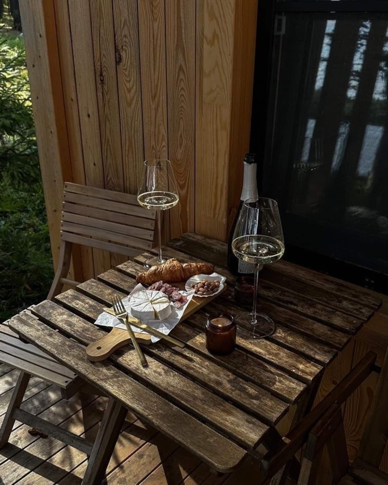
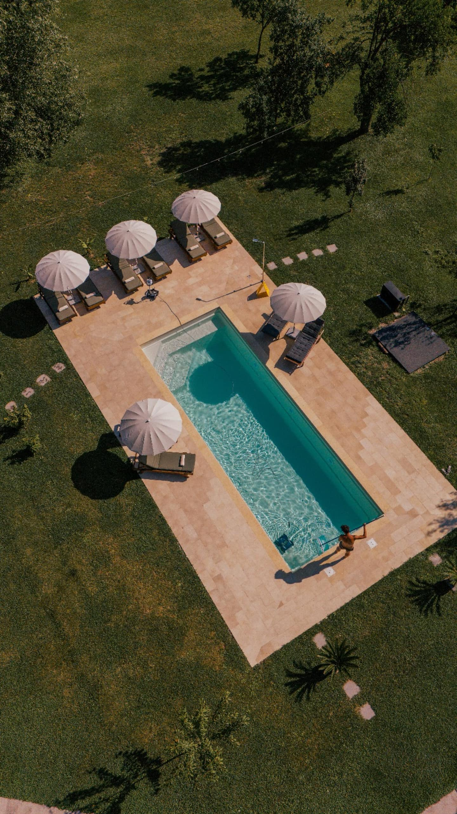
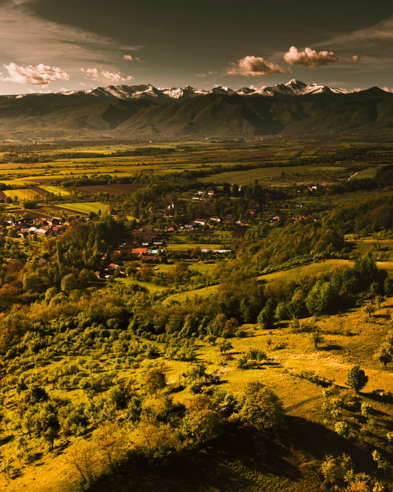
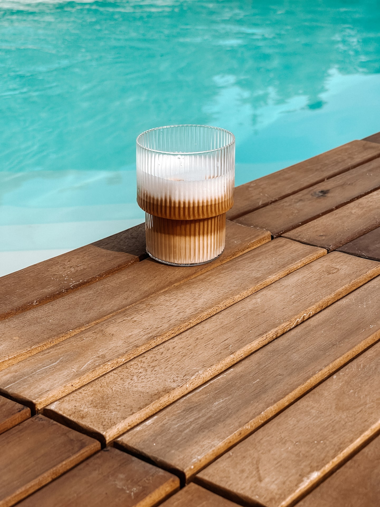
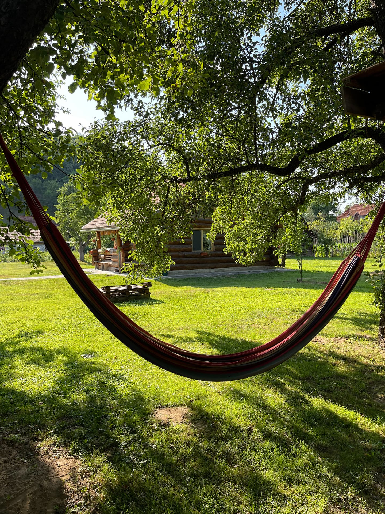
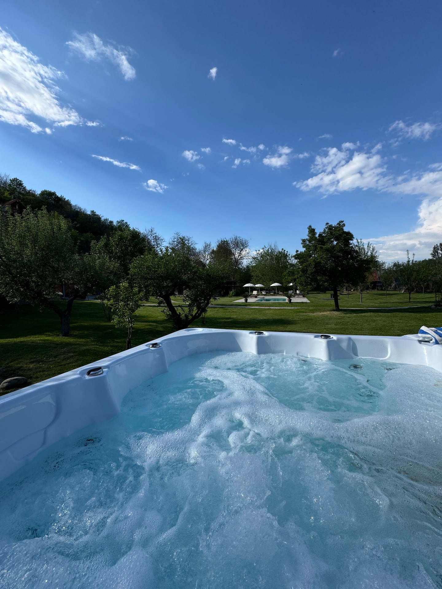
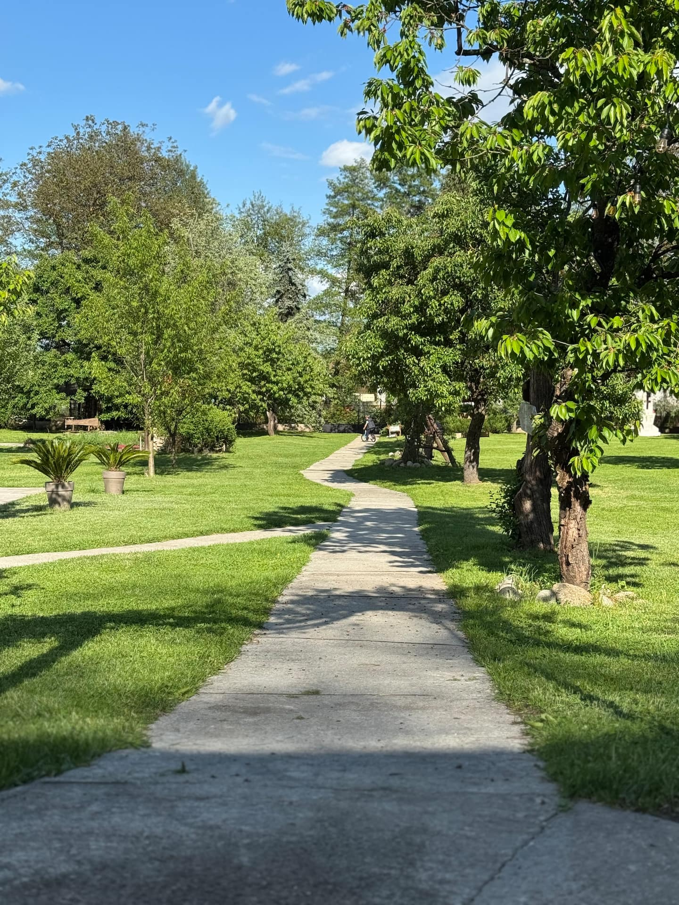
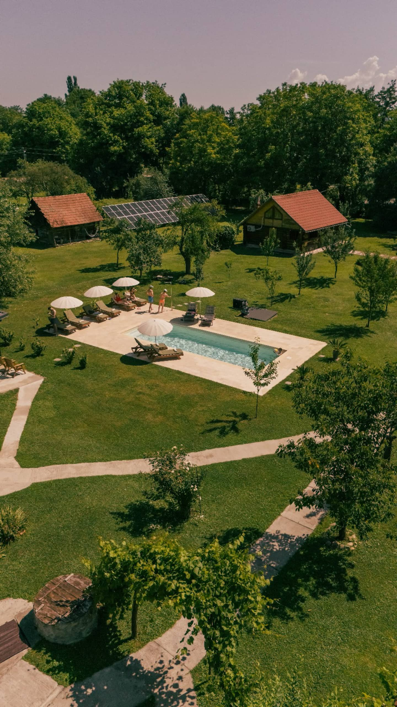
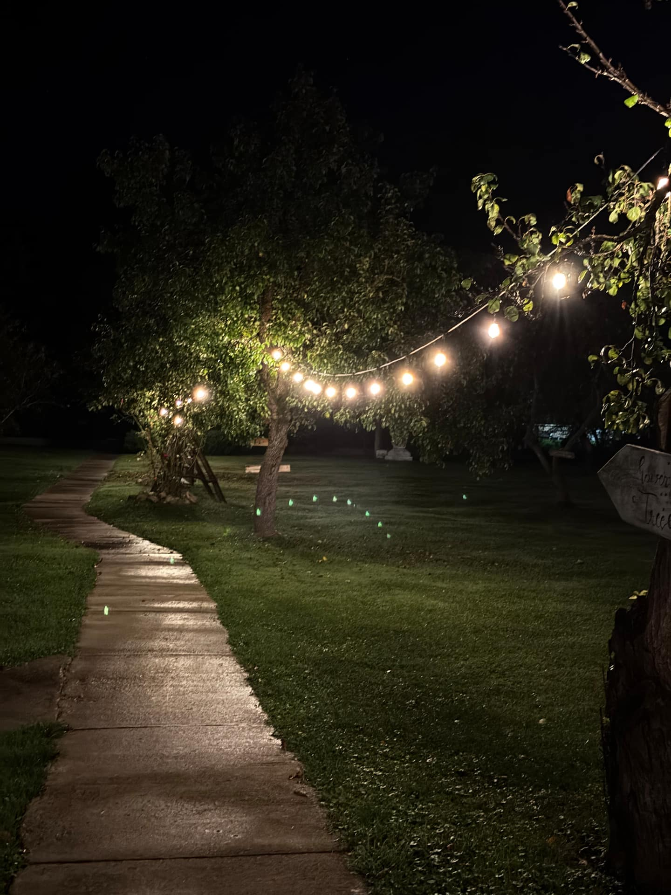
Questions, answered.
Is it really adults only?
Yes — always. The estate is made for couples and small groups who want quiet, so we welcome adults only. It's how we protect the calm.
When can we use the pool and jacuzzi?
The heated pool and jacuzzi are open through the warm season, roughly May to September. In the colder months the cabins lean into wood-stove warmth and snow-quiet instead.
How many guests can each stay take?
Each stay is intimate: the cabins sleep up to four, the treehouses and the barn up to two. You'll find the exact layout on each stay's page.
Where exactly is the estate?
Near Peșteana, in Hunedoara county — wild Transylvania, an easy distance from Hunedoara. Full directions arrive with your booking confirmation.
Can we have meals cooked for us?
Yes — food is one of our quiet loves. Breakfast and dinner can be cooked to order for an extra charge: a short, seasonal menu of a few dishes we prepare and plate ourselves, not a full restaurant. Ask when you book, and it becomes one of the best parts of the stay.
Can we book directly?
Yes, and we'd prefer it — booking direct with Rares & Gabie skips the platform fees. Send a request and they'll confirm your dates and rates, usually within a day.